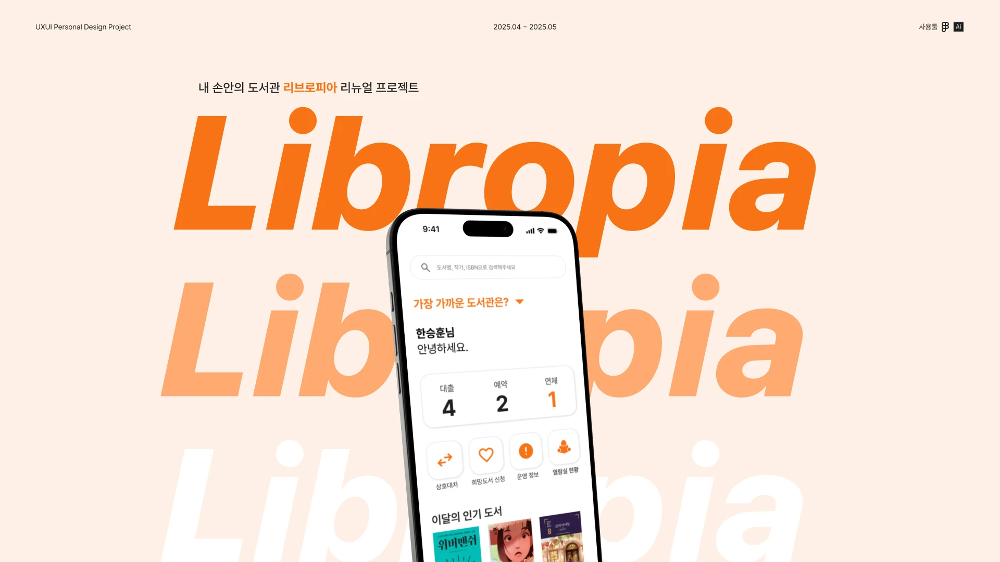
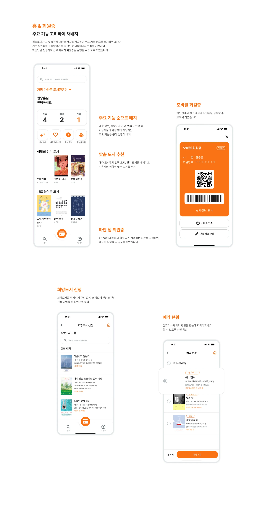
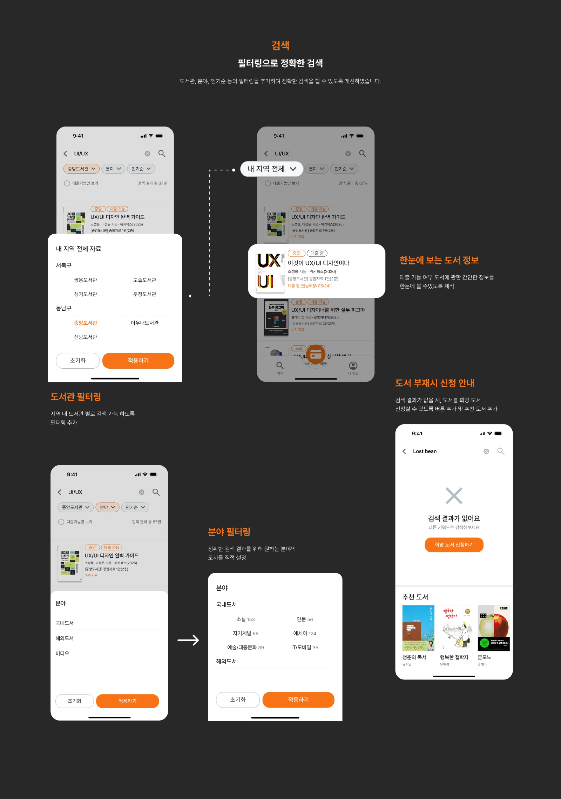
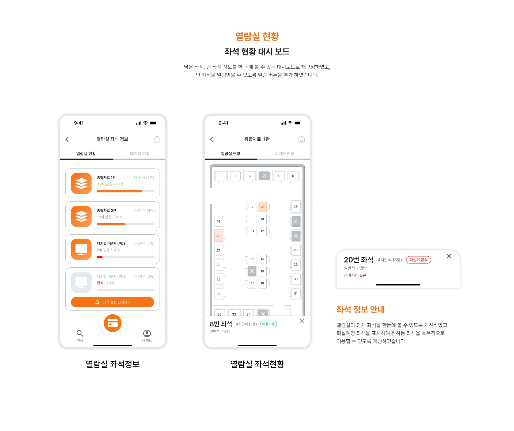

2025.04 — 2025.05
Libropia
도서관 아르바이트를 하며 직접 써 본 공공도서관 앱 리브로피아의, 자주 쓰는 기능을 찾기 쉽게 만든 리디자인

Background
도서관에서 1년 동안 주말 아르바이트를 하며 리브로피아에 관심이 생겼습니다. 리브로피아는 전국 공공도서관 정보를 제공하는 앱인데, 직접 설치해 도서 검색과 상호대차 같은 기능을 써 보니 사용 경험이 불편했습니다.
사용자 리서치에서 가장 크게 나온 문제는 두 가지였습니다. ‘상호대차와 예약 기능이 어렵다’, ‘원하는 기능을 한 번에 찾기 어렵다’. 이 두 문제를 해결하는 방향으로 정보 구조와 화면을 다시 설계했습니다.
Key Decisions
메뉴 단계를 줄이고 기능을 묶은 구조
원하는 기능을 한 번에 찾기 어렵다는 문제를 풀기 위해 메뉴 단계를 줄이고, 흩어져 있던 기능을 목적별로 묶어 자연스럽게 이어지도록 정보 구조를 다시 짰습니다.
하단 탭에 고정한 모바일 회원증
가장 자주 쓰는 기능이라 어느 화면에서든 바로 열 수 있게 하단 탭에 고정했습니다. 스와이프로 여는 방식도 고민했지만, 의도하지 않게 열리는 오조작을 고려해 고정 버튼으로 정했습니다.
이용 빈도 순으로 배치한 홈
리서치에서 이용 빈도가 높게 나온 대출 · 예약 · 열람실 기능을 홈 상단에 모았습니다. 상호대차와 예약 현황도 한 화면에서 확인할 수 있게 통합했습니다.
웜톤을 유지한 오렌지
기존 앱의 노란색과 같은 웜톤을 유지하면서, 흰 배경에서 버튼과 강조 요소가 더 잘 보이도록 시인성이 높은 오렌지로 바꿨습니다.
Design System
오렌지 한 가지를 포인트로 쓰고, 회색 단계와 Pretendard 굵기로 정보의 위계를 나눴습니다.
Color
- Orange#F97316
- Orange Light#FFC298
- Orange Soft#FFEFE4
- Ink#1F1F1F
- Slate#4B5257
- Gray#6A7278
- Gray Light#B4BDC2
- Surface#F6F8FA
Typography
이달의 인기 도서
Pretendard SemiBold 24 — 화면 제목대출 · 예약 · 열람실
Pretendard Medium 18 — 주요 기능도서명, 작가, ISBN으로 검색해주세요
Pretendard Regular 12 — 안내 문구
Research
기존 앱 화면을 분석하고 사용자 의견을 모아 문제점과 해결 방향을 정리했습니다.

Information Architecture
홈에 흩어져 있던 기능을 목적별로 묶고 메뉴 단계를 줄였습니다.

Screens



Retrospective
지금 다시 만든다면 홈 화면의 검색창을 없애고 싶습니다. 하단에 이미 검색창이 고정되어 있어 역할이 겹치고, 검색창을 빼면 이달의 인기 도서가 잘리지 않고 한 화면에 모두 보이기 때문입니다.